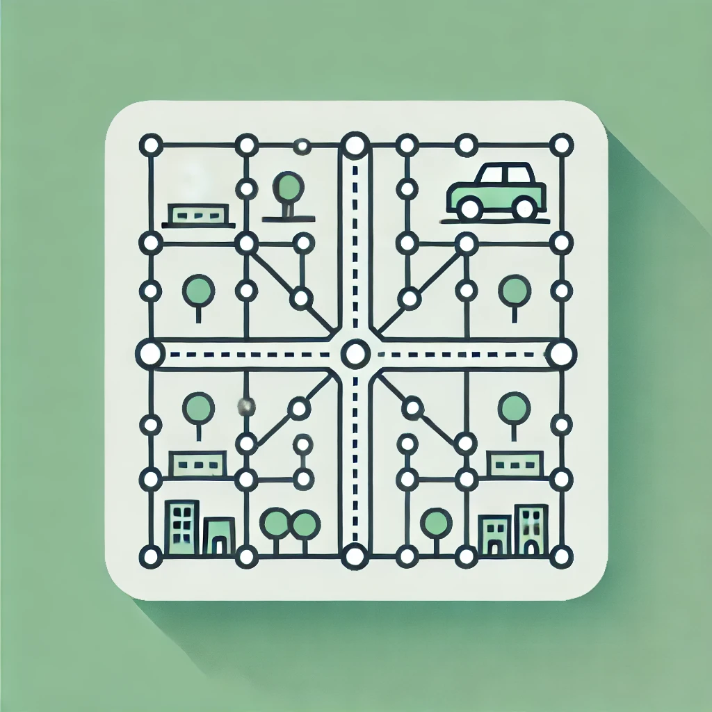

Self-Driving Car Project
By perymimon

This is my enhanced version of the Self-Driving Car course by Radu Mariescu-Istodor. I've made several performance improvements to enhance both the experience and learning outcomes.
First Phase: 2D car
-
World Editor
 Design your graph and city environment, including importing data from OpenStreetMap. -
Training One Car
 Train a single car to navigate a linear road.
Train a single car to navigate a linear road.
-
Big City
 Train your car in the custom world you've made with the World Editor.
Train your car in the custom world you've made with the World Editor.
Second Phase: 3D car
-
Race 3D
Drive the car in 3d environment using keyboard
-
Race 3D using computer camera
-
Race 3D using sensors on phone
Extras
- Segment Intersection - A visual tool to demonstrate segment intersection calculations.